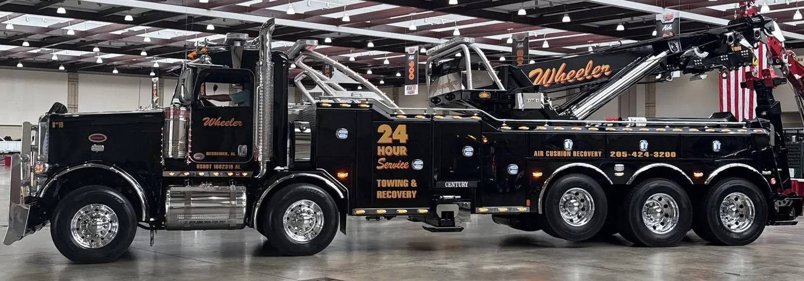
Heavy-Duty TowingTowing for semi-trucks, buses and large commercial vehicles across Alabama.
From daily drivers to demanding commercial recovery, Wheeler has equipment for jobs large and small.
Wheeler Wrecker Service offers 24-hour towing and recovery dispatch from Bessemer and Alabaster. From light-duty cars and classic vehicles to semi-trucks, buses, heavy equipment and complex recovery scenes, call dispatch for assistance with an urgent situation or to confirm the right equipment for your job.

Heavy-Duty TowingTowing for semi-trucks, buses and large commercial vehicles across Alabama.
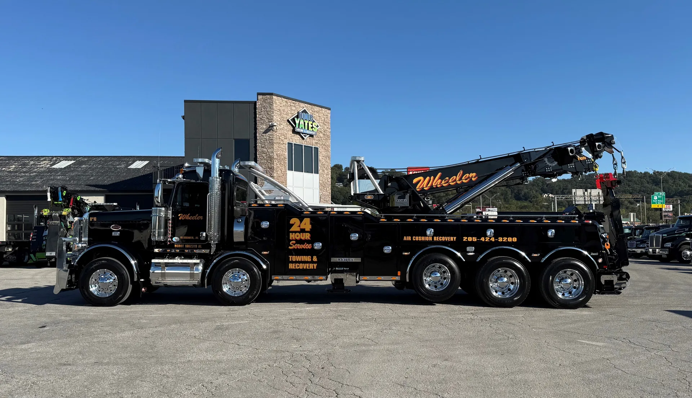
Heavy-Duty RecoveryComplex recovery for disabled commercial vehicles in difficult positions.
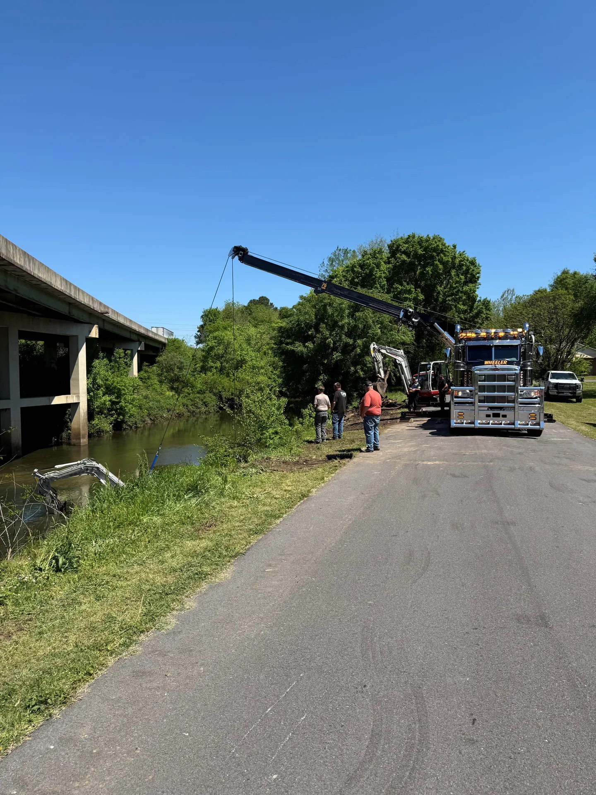
Mobile Rotator / Crane RecoveryRotator and crane recovery support for demanding recovery situations.
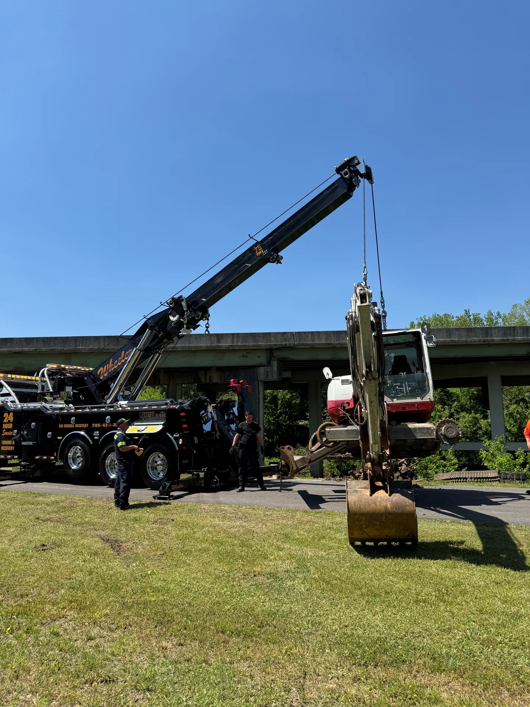
Accident RecoveryRecovery support for accident-damaged, disabled or hard-to-access vehicles.
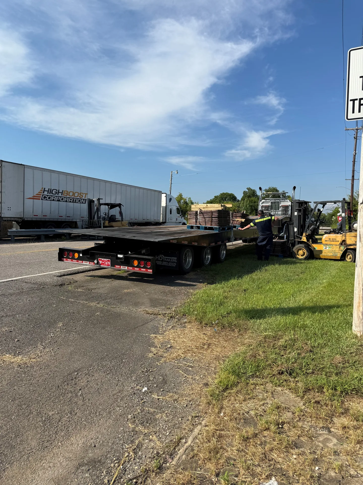
Commercial Truck & Bus TowingTowing and transport for semi-trucks, buses and commercial fleets.
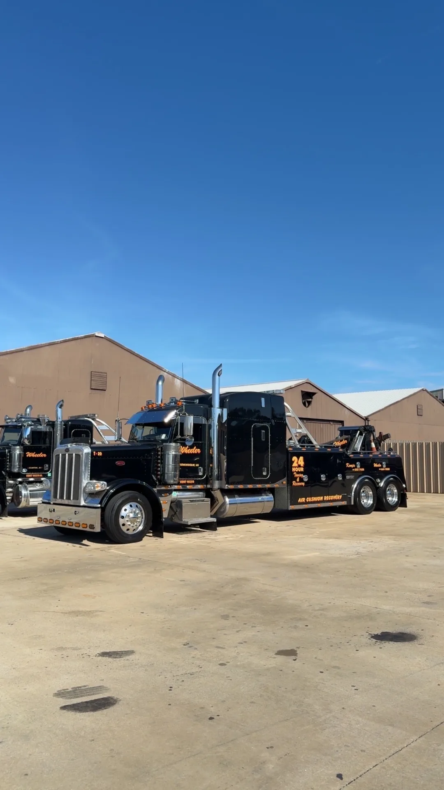
Commercial Fleet Towing & RecoveryOngoing towing and recovery support for fleet operators and businesses.
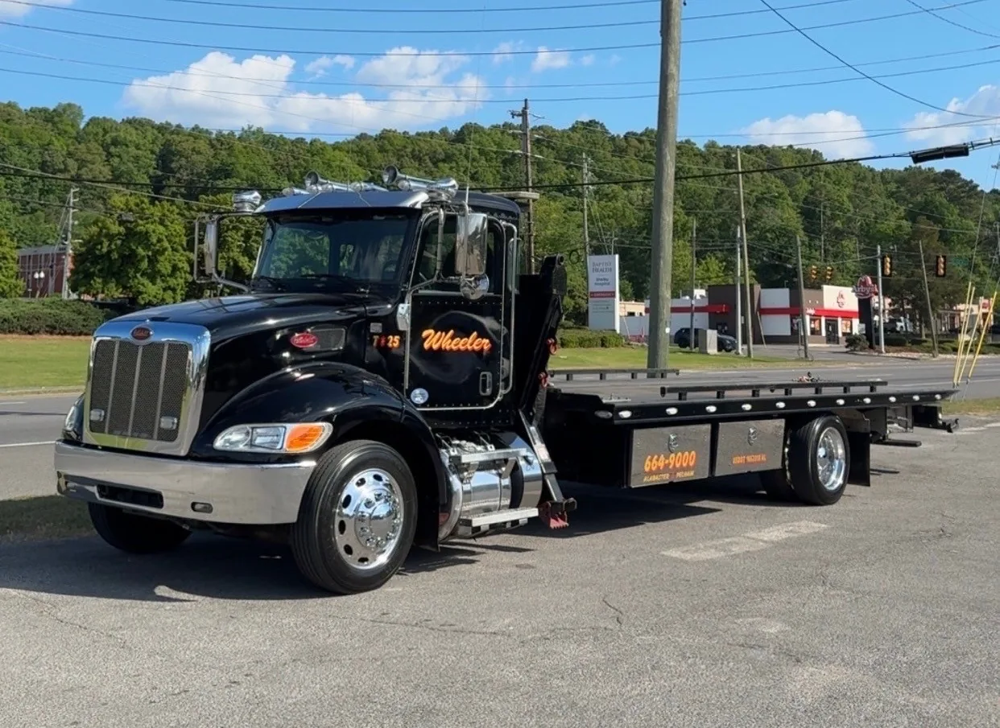
Medium-Duty Towing & RecoveryTowing and recovery for medium-duty trucks, RVs and work vehicles.
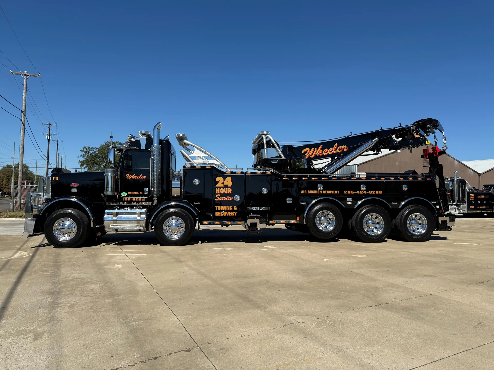
Off-Road Recovery & WinchingWinching and recovery for vehicles stuck off the roadway or in rough terrain.
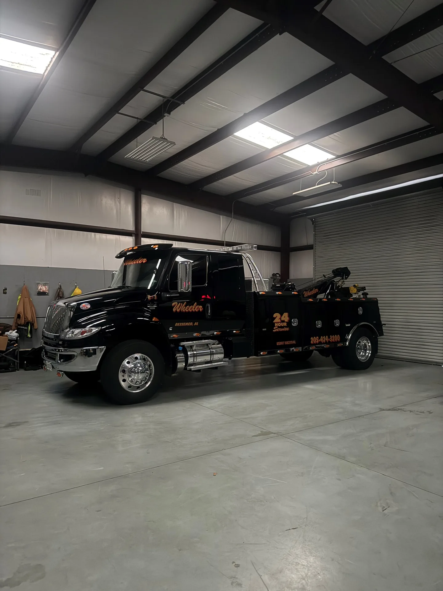
Equipment TransportationEquipment hauling for owners, contractors and businesses across Alabama.
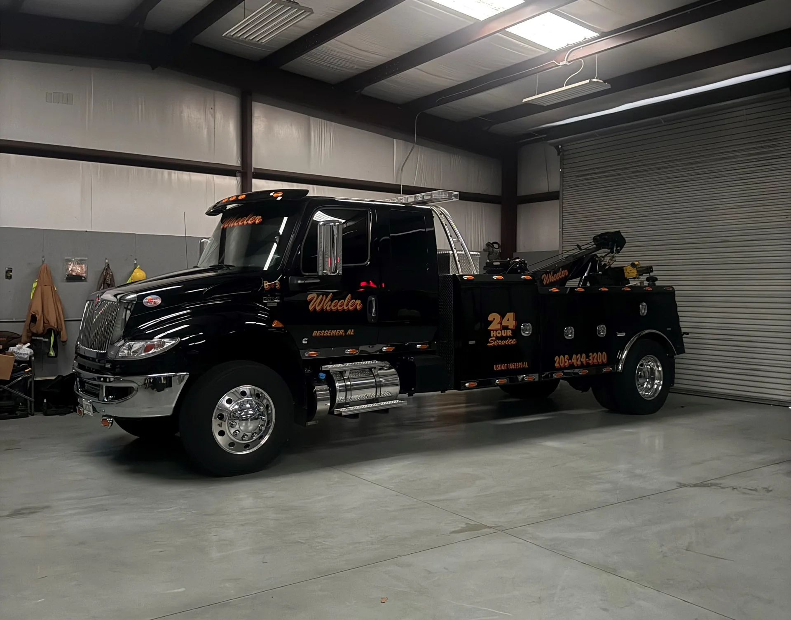
Heavy Equipment TransportMovement of heavy equipment between job sites, shops and storage locations.
 Light-Duty Towing & Recovery
Light-Duty Towing & RecoveryFast, careful towing for cars, SUVs, motorcycles and light trucks.
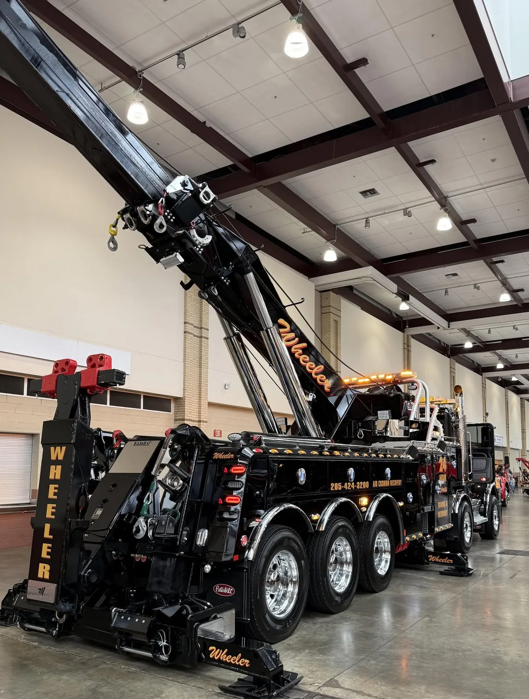
Classic-Car & Passenger-Vehicle TowingSpecialized towing for classic cars and passenger vehicles that need extra care.
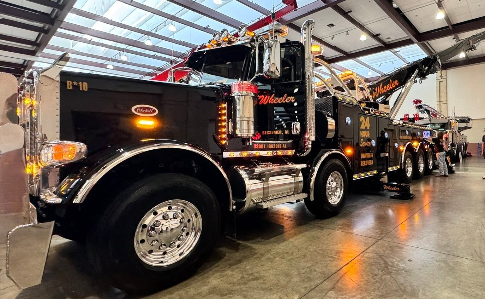
Long-Distance TowingTransport for cars, trucks and equipment between Alabama cities and beyond.
24-hour help when your vehicle lets you down — call dispatch day or night.
Safe storage for towed and recovered vehicles at our Bessemer and Alabaster locations.
Specialized recovery for submerged vehicles and equipment — call 24-hour dispatch.